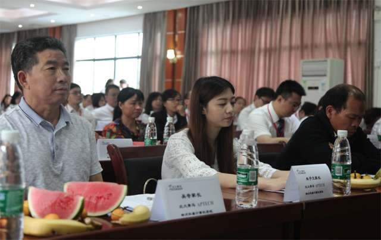
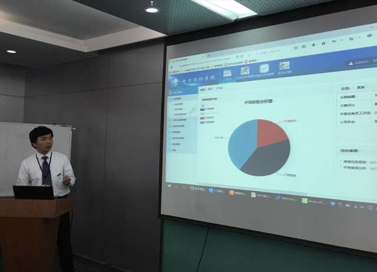
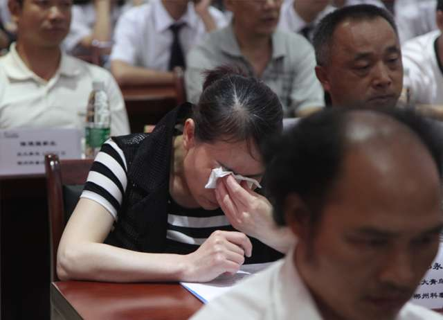
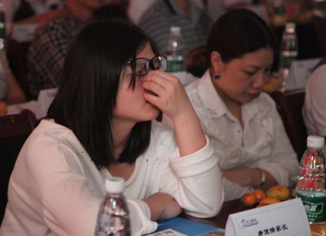
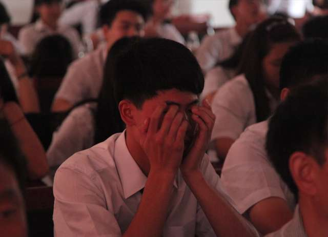
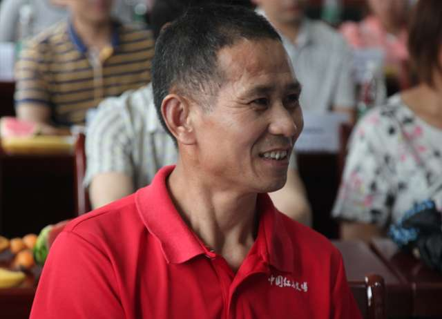
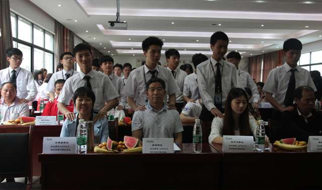

-

扫码关注青鸟官方微信


微信扫一扫
关注北大青鸟
2016年2月28号，166班开班了，22个帅气的男生和8个美丽的女生。
2016年3月31号，166班的同学们第一次参加晨练。
2016年4月15号 166班的同学们参加了军训。
2016年5月6号， 166班的家长和同学参加了家长会。
共计67天，青鸟学员迎来第一次家长会。
小青想告诉你们，北大青鸟是有家长会的。
北大青鸟作为一个职业机构，为什么要有家长会呢？也没见哪个培训机构有过家长会啊？
很多人说职业教育主要教授一技之长，能够让学生走出校门在社会上有立足之本就ok。有人说也对，想要素质教育（素质教育就是对学生思想道德、能力培养、个性发展等方面的培养）直接在义务教育都已经完成了啊，来职业学校学会技术就行。
对吗？理论上是对的，但现实中的义务教育已经演变成应试教育，哪还顾及素质教育？青鸟为什么跟其他职业学校不一样，要开家长会？因为青鸟学员很多都是高中生，在即将面临社会选择的这个特殊阶段对于素质教育更不能松懈。北大青鸟要做的不仅限于对于专业技能的培养还有社会需要的素质培养。所以开家长会的目的就是对学院负责、对家长负责，让家长检验学生在学校在独立自主、处事能力、职业素质、专业能力等素质培养中是否得到了健康发展。
那么，青鸟学员都得到了哪些方面的素质培养？青鸟的家长会到底是什么样呢？是不是跟义务教育里的家长会一样？快跟小青一起来体验一下。
T166班李毅，来自郴州嘉禾，以前是个很调皮的孩子，在外面工作了一年，面对社会时候感到了自己的无力，回到家里，听表姐李成凤推荐，选择来到了青鸟学IT技术。在来到青鸟将近70天里，发生了很明显的改变。以前的自己特别不爱说话，也不自信，记得来青鸟第一次自我介绍的时候，自己是倒数第二个上场的。
在开班军训的锻炼中觉得特别累，但是也挑战了自己，班级凝聚力强，当看到班级这么团结的时候，那一瞬间突然醒悟自己要改变，学习现在一直在追随班级脚步。爸妈在广州，以前的自己从来不喜欢给家长打电话，在这里看到人和人之间的用心，学会了用心待人，主动和父母沟通。
T166班刘艳，邵阳人，一个人见人爱的女生，之前在外面工作一年觉得特别辛苦选择来到青鸟，哥哥也是从青鸟毕业，说以也来青鸟上学。
以前她非常爱玩不爱学习，在这里切实感受到，学习有氛围，班里的同学都爱学习，爱玩的很少，甚至你不爱学习班里都没有人愿意跟你靠近。而且每天的学习晨练让人时刻感受到学习带来的愉悦，加上老师对自己学习格外上心，不时的进行督促，所以对待学习我开始变得认真起来。
T166班廖金灵，来自新田，高中的时候没有考上，父母花钱让自己上了高中。在桂阳一中，全校都认识自己，因为自己调皮捣蛋，特立独行，父母和自己的说话都是吵架，伤透了父母的心。在高中的时候，一次班主任竟然打电话告诉父母说我不适合学习，自尊心伤透，更没有学的动力了，于是我选择了离开学校。回到新田老家，在这里我当了一名学徒，干着又脏又累的活，拿着吃饭都不够的工资，爸爸不知道从哪里打听到青鸟，坚持送我来到这里，学徒的生活让我意识到没有技术只能干又脏又累的活儿，更会被人看不起，所以和爸爸的想法一拍即合，立刻来到了这里。
以前在高中读书都是玩，发现现在的自己竟然可以坚持每天凌晨睡6点起床去学习！！！自己都难以相信。在这里有力量推着自己前行，就像今天你在家长会看到我，已经阳光自信。
T166班邓光明，来自浩塘，在初中的时候成绩很好是班上的前十名，初二的时候一次和同学的冲突觉得很委屈，明明是自己没有错，别人先冲突，老师还怪罪自己。从此堕落，爱上了玩，去ktv，酒吧，和一切能玩的地方，后来自己被开除了。在外面打工，每个月的薪水不够自己用，还要找父母要钱。表姐邓潇伶从北大青鸟毕业，也就过来学。
在这里父母要花辛苦赚来的钱，看着身边的人都你追我赶，也爱上了学习，现在能自己做网站。这次家长会，转身发现父母的爱都在我的身边，我看到他们眼中的泪光是幸福的。
T166周郴鹏，郴州人，以前很内向，不喜欢和别人交流。在学校晨练的锻炼中自己变成了不折不扣的话唠（善于表达），从没有想过的改变，曾经的我在郴州高斯贝尔上班，早上8点上班到晚上9点，每个月休息一天，不堪回首的车间生活，再也不愿意回去的过去。现在我直面未来，有了人生的方向感觉浑身有了精神劲儿。
这是采访到几个学员的故事背景，让粉丝们也一起见证一下他们的成长和改变。这天家长会下着大雨，但是家长们却都到齐了，孩子的成长比什么都重要。所以T166班的学员也是精心准备了视频送给赶来的家长们哦~
简短的视频记录了学员仅仅2个月的日日夜夜，在这背后是无数家长注视的目光，有那么一个人从我们出生时起就给了我们所有的爱，有那么一个人会为我们担心害怕，有那么一个人会因为我们一点点的改变而开心，这个人就是我们的父母。
学员们走到父母身边，给父母捶捶背，揉揉肩，给父母一个拥抱，大声对父母说出那一句：爸爸妈妈辛苦了，我爱你们！”很多家长哭了，很多家长笑了，但小青觉得这都是幸福的不同表达。
    家长会期间还穿插了学员们表演的节目，整场家长会在一个像家庭聚会般温馨的氛围中落幕。家长看到了孩子的改变，孩子明白了父母的苦心，所有的情感释放都把亲情连接的更加紧密。最重要的是，这一刻让青鸟人感受到了职业教育和素质教育结合后的价值。
小青看到一篇文章易中天（国内知名教育家）曾在一次高峰论坛上发表关于教育（小青认为可以说是独树一帜）的独特看法，后被各大媒体争相报道：易中天大力主张义务教育完成后应该上职业学院。他说现在孩子都非常聪明，十二年制的教育（小初高）应该改为十年，学生完全可以学会；课程不是奔着高考，而是素质教育。他大胆的提出：十年义务教育完成后，仅一部分去上大学，大批的应该是去上职业学院学习一技之长。
易中天的这种说法，无疑指出了现在最让人头疼的两个教育问题：一个是应试教育脱离素质教育，一个是大学的不学无术。先不论易中天的观点是否可以行，但确实能解决现在很多学生走出校门仍然找不到工作的现实问题。试想一下，如果现在的学校能将素质教育与职业教育结合在一起，把培养在实用技术与个人素质提升结合在一起，就业难将不会再成为社会性的问题。
Copyright 2018-2023 JiNan Beida Jade Bird ShangXueTang School of software Co.,Ltd北大青鸟IT教育 济南北大青鸟尚学堂软件学院
山东尚学堂信息技术有限公司 版权所有
公司地址： 济南市槐荫区军泰写字楼（五院斜对面）
网址： http://www.bdqnsxt.com/
鲁ICP备 18012331号
关于我们 | 站长统计